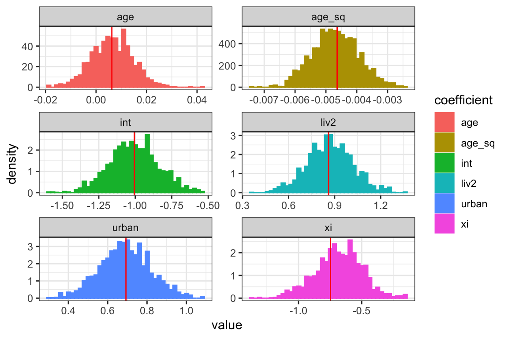

hmclearn: Logistic Mixed Effects Regression Example
Samuel Thomas
2020-06-02
logistic_mixed_effects_hmclearn.RmdIntroduction
This vignette demonstrates fitting a Logistic mixed effects regression model via Hamiltonian Monte Carlo (HMC) using the hmclearn package.
For a mixed effects model with binary response, we let
\[ Pr(\mathbf{y} = \mathbf{1} | \mathbf{X}, \mathbf{Z}) = [1 + e^{-\mathbf{X}\boldsymbol\beta-\mathbf{Z} \mathbf{u} } ]^{-1}, \] or
\[ \begin{aligned} \text{logit}[P(\mathbf{y} = 1 | \mathbf{u})] &= \mathbf{X}\boldsymbol\beta + \mathbf{Z}\mathbf{u}, \\ \mathbf{u} &\sim N(0, \mathbf{G}). \end{aligned} \]
library(hmclearn)
The response for each subject is a vector \(\mathbf{y} = (\mathbf{y}_1, ..., \mathbf{y}_n)\) for \(n\) subjects \(i= 1, ..., n\). Each subject has \(d\) observations \(\mathbf{y}_i = (y_{i1}, ..., y_{id})\) and we let \(j = 1, ..., d\). The fixed effect design matrix is composed of matrices for each subject, \(\mathbf{X} = (\mathbf{X}_1, ..., \mathbf{X}_n)\), and \(\mathbf{X}_i \in \mathbb{R}^{d\times (q+1)}\) for the fixed effects parameters \(\boldsymbol\beta = (\beta_0, ..., \beta_q)\). The full fixed effects design matrix is therefore \(\mathbf{X} \in \mathbb{R}^{nd \times (q+1)}\).
For random effects, \(\mathbf{Z} = \text{diag}(\mathbf{Z}_1, ..., \mathbf{Z}_n)\), with individual random effects matrices \(\mathbf{Z}_i\) for each of the \(i\) subjects. A random intercept model specifies \(\mathbf{Z}_i\) as a column vector of ones where \(\mathbf{Z}_i = \mathbf{z}_i = \mathbf{1}_d\). The full random effects design matrix \(\mathbf{Z} \in \mathbb{R}^{nd\times n}\). The parameterization for random effects is \(\mathbf{u} = (\mathbf{u}_1, ..., \mathbf{u}_n)^T\) with vectors \(\mathbf{u}_i\) for each subject. A random intercept model is somewhat simplified where \(\mathbf{u}_i = u_i\) denotes a single random intercept parameter for each subject \(i\), and \(\mathbf{u} = (u_1, ..., u_n)^T\).
We set \(\mathbf{u}\) as one of our priors, following a multivariate normal distribution, \(\mathbf{u} \sim N(0, \mathbf{G})\). For our random intercept model, the specification of the covariance matrix \(\mathbf{G}\) is expanded to facilitate efficient sampling using HMC. We let \(\mathbf{u} = \mathbf{G}^{1/2}\boldsymbol\tau\) where \(\mathbf{G}^{1/2} = \lambda \mathbf{I}_n\). An additional parameter \(\boldsymbol\tau = (\tau_1, ..., \tau_n)^T\) where each of these parameters is standard normal \(\tau_i \sim N(0, 1)\). The full covariance matrix is then \(\mathbf{G} = \lambda^2 \mathbf{I}_n \boldsymbol\tau\).
The parameterization approach for this model uses a strategy recommended by Betancourt, Girolami (2013) to facilitate more efficient sampling in HMC.
Further, we select a half-t family of distributions appropriate for hierarchical models per Gelman (2006). This parameterization is well-behaved around 0, in contrast to inverse gamma, and provides flexibility for informed priors.
We select a parameterization of \(\mathbf{G}\) such that the likelihood and its gradient can be derived for HMC. To this end, we uses LDL decomposition of \(\mathbf{G}\) to form a flexibile parameterization that can easily handle restrictions (Chan, Jelizkov 2009).
\[ \begin{aligned} \mathbf{u} &\sim N(0, \mathbf{G}), \\ \mathbf{G} &= \mathbf{L} \mathbf{D} \mathbf{L}^T, \\ &= \mathbf{L} \mathbf{D}^{1/2} \mathbf{D}^{1/2} \mathbf{L}^T. \\ \end{aligned} \]
Let \(\boldsymbol{\lambda} = (\lambda_1, ..., \lambda_p)\) denote the diagonal elements of \(\mathbf{D}^{1/2}\) where \(p\) indicates the number of random effect parameters, specified as nrandom in hmclearn. A future release of hmclearn will allow prior specification for the off-diagonal elements of \(L\). For the current version, we let \(L = I_{p}\).
\[ \mathbf{D}^{1/2} := \begin{pmatrix} \lambda_1 & 0 & ... & 0 \\ 0 & \lambda_2 & 0 ... & 0 \\ ... & ... & ... & ... \\ 0 & 0 & ... & \lambda_p \end{pmatrix}, \quad \mathbf{L} := \begin{pmatrix} 1 & 0 & 0 & ... & 0 \\ 0 & 1 & 0 & ... & 0 \\ 0 & 0 & 1 & ... & ... \\ ... & ... & ... & ... & ... \\ 0 & 0 & ... & ... & 1 \\ \end{pmatrix}. \]
We set the prior for \(\boldsymbol\beta\) as multivariate normal with variance \(\sigma_\beta^2\), a hyperparameter set by the analyst. The priors for \(\boldsymbol\lambda\) are half-t per Gelman (2006) on hierarchical models.
\[ \begin{aligned} \pi(\boldsymbol\beta | \sigma_\beta^2) &\propto N(0, \sigma_\beta^2 \mathbf{I}), \\ \pi(\boldsymbol\lambda) &\sim \left(1 + \frac{1}{\nu_\lambda}\left(\frac{\boldsymbol\lambda}{A_\lambda} \right)^2 \right)^{-(\nu+1)/2}. \end{aligned} \]
We want proposals of \(\boldsymbol\lambda\) over the real number line. Therfore we derive the distribution of the transformed parameter \(\boldsymbol\xi\) based on a change of variable
\[ \begin{aligned} \boldsymbol\xi &:= \log\boldsymbol\lambda, \\ \boldsymbol\lambda &:= e^{\boldsymbol\xi}. \end{aligned} \]
We need to compute the Jacobian of the transformation
\[ \begin{aligned} \pi_{\boldsymbol\xi}(\boldsymbol\xi) &= \pi_{\boldsymbol\xi}(g^{-1}(\boldsymbol\xi)) \left\lvert \frac{d\boldsymbol\lambda}{d\boldsymbol\xi} \right\rvert, \\ &= \pi_{\boldsymbol\lambda} (e^{\boldsymbol\xi})\lvert e^{\boldsymbol\xi}\rvert, \\ &= \left(1 + \frac{1}{\nu_\xi} \frac{e^{2\boldsymbol\xi}}{A_{\xi}^2}\right)^{-\frac{\nu_{\xi}+1}{2}}e^{\boldsymbol\xi}, \\ \log \pi(\boldsymbol\xi) &\propto -\frac{\nu_{\xi}+1}{2}\log\left(1 + \frac{1}{\nu_{\xi}} \frac{e^{2\boldsymbol\xi}}{A_{\xi}^2}\right)+ \boldsymbol\xi. \end{aligned} \]
Derive log posterior and gradient for HMC
First, we derive the likelihood for our logistic mixed effects regression model.
\[ \begin{aligned} f(\mathbf{y}|\mathbf{X}, \mathbf{Z}, \boldsymbol\beta, \mathbf{u}) &= \prod_{i=1}^n \prod_{j=1}^d p(y_{ij})^{y_{ij}}(1-p(y_{ij}))^{1-y_{ij}}, \\ &= \prod_{i=1}^n \prod_{j=1}^d \left(\frac{1}{1 + e^{-\mathbf{x}_{ij}^T\boldsymbol\beta - \mathbf{z}_{ij}^T\mathbf{u}_i}} \right)^{y_{ij}} \left( \frac{e^{-\mathbf{x}_{ij}^T\boldsymbol\beta - \mathbf{z}_{ij}^T\mathbf{u}_i}}{1+e^{-\mathbf{x}_{ij}^T\boldsymbol\beta - \mathbf{z}_{ij}^T\mathbf{u}_i}} \right)^{1-y_{ij}}, \\ \log f(\mathbf{y}|\mathbf{X}, \mathbf{Z}, \boldsymbol\beta, \mathbf{u}) &= \sum_{i=1}^n \sum_{j=1}^d -y_{ij} \log\left(1+e^{-\mathbf{x}_{ij}^T\boldsymbol\beta - \mathbf{z}_{ij}^T\mathbf{u}_i} \right) + (1 - y_{ij})\log e^{-\mathbf{x}_{ij}^T\boldsymbol\beta - \mathbf{z}_{ij}^T\mathbf{u}_i} - (1 - y_{ij})\log\left(1+e^{-\mathbf{x}_{ij}^T\boldsymbol\beta - \mathbf{z}_{ij}^T\mathbf{u}_i} \right), \\ &= \sum_{i=1}^n\sum_{j=1}^d -y_{ij} \log\left(1+e^{-\mathbf{x}_{ij}^T\boldsymbol\beta - \mathbf{z}_{ij}\mathbf{u}_i} \right) -\mathbf{x}_{ij}\boldsymbol\beta -\mathbf{z}_{ij}\mathbf{u}_i + y_{ij}\mathbf{x}_{ij}^T\boldsymbol\beta + y_{ij}\mathbf{z}_{ij}^T\mathbf{u}_i - \\ &\qquad \log\left(1+e^{-\mathbf{x}_{ij}^T\boldsymbol\beta - \mathbf{z}_{ij}^T\mathbf{u}_i} \right) + y_{ij} \log\left(1+e^{-\mathbf{x}_{ij}^T\boldsymbol\beta - \mathbf{z}_{ij}^T\mathbf{u}_i} \right), \\ &= \sum_{i=1}^n \sum_{j=1}^d -\mathbf{x}_{ij}^T\boldsymbol\beta - \mathbf{z}_{ij}^T\mathbf{u}_i + y_{ij}\mathbf{x}_{ij}^T\boldsymbol\beta + y_{ij}\mathbf{z}_{ij}^T\mathbf{u}_i - \log\left(1+e^{-\mathbf{x}_{ij}^T\boldsymbol\beta - \mathbf{z}_{ij}^T\mathbf{u}_i} \right), \\ &= \sum_{i=1}^n \sum_{j=1}^d (y_{ij}-1 )(\mathbf{x}_{ij}^T\boldsymbol\beta + \mathbf{z}_{ij}^T\mathbf{u}_i) - \log\left(1+e^{-\mathbf{x}_{ij}^T\boldsymbol\beta - \mathbf{z}_{ij}^T\mathbf{u}_i} \right), \\ &= (\mathbf{y} - \mathbf{1}_{nd})^T (\mathbf{X}\boldsymbol\beta + \mathbf{Z}\mathbf{u}) - \mathbf{1}_{nd}\log (1 + e^{-\mathbf{X}\boldsymbol\beta - \mathbf{Z}\mathbf{u}}). \end{aligned} \]
Additional notation is added to simplify the log likelihood, log posterior, and gradient formulations, \(\widetilde{\mathbf{D}}^{1/2} = \mathbf{I}_n \otimes \mathbf{D}^{1/2}\). Note that \(\widetilde{\mathbf{D}}^{1/2} = \left(\widetilde{\mathbf{D}}^{1/2}\right ) ^T\) due to symmetry.
We write the re-parameterized log likelihood,
\[ \begin{aligned} \log f(\mathbf{y}|\mathbf{X}, \mathbf{Z}, \boldsymbol\beta, \xi, \boldsymbol\tau) &= (\mathbf{y} - \mathbf{1}_{nd})^T (\mathbf{X}\boldsymbol\beta + \mathbf{Z}\widetilde{\mathbf{D}}^{1/2}\boldsymbol\tau) - \mathbf{1}_{nd}\log (1 + e^{-\mathbf{X}\boldsymbol\beta - \mathbf{Z}\widetilde{\mathbf{D}}^{1/2}\boldsymbol\tau}). \end{aligned} \]
Next, we express the log priors that we use with transformations, omitting constants. Note that the log densities of the priors with log densities include an additive term for the transformed distribution (i.e. \(\xi\) and \(\gamma\)),
\[ \begin{aligned} \log \pi(\boldsymbol\beta | \sigma_\beta^2) &\propto -\frac{\boldsymbol\beta^T \boldsymbol\beta}{2\sigma_\beta^2}, \\ \log \pi(\boldsymbol\xi | \nu_\xi, A_\xi) &\propto -\frac{\nu_\xi + 1}{2} \log \left( 1 + \frac{1}{\nu_\xi} \left(\frac{e^\boldsymbol\xi}{A_\xi} \right)^2 \right) + \boldsymbol\xi, \\ \log \pi(\boldsymbol\tau) &\propto -\frac{1}{2}\boldsymbol\tau^T \boldsymbol\tau. \end{aligned} \]
The full log posterior with transformed variables is the log likelihood plus the log prior. We develop the log posterior omitting constants,
\[ \begin{aligned} \log f(\boldsymbol\beta, \xi, \boldsymbol\tau|\mathbf{y}, \mathbf{X}, \mathbf{Z}) &\propto \log f(\mathbf{y}|\mathbf{X}, \mathbf{Z}, \boldsymbol\beta, \xi, \boldsymbol\tau) + \log f(\boldsymbol\beta, \xi, \boldsymbol\tau | \sigma_\beta^2, \nu_\xi, A_\xi), \\ &\propto \log f(\mathbf{y}|\mathbf{X}, \mathbf{Z}, \boldsymbol\beta, \xi, \boldsymbol\tau) + \log f(\boldsymbol\beta | \sigma_\beta^2) + \log f(\xi | \nu_\xi, A_\xi) + \log f(\boldsymbol\tau), \\ &\propto (\mathbf{y} - \mathbf{1}_{nd})^T (\mathbf{X}\boldsymbol\beta + \mathbf{Z}\widetilde{\mathbf{D}}^{1/2}\boldsymbol\tau) - \mathbf{1}_{nd}^T\log (1 + e^{-\mathbf{X}\boldsymbol\beta - \mathbf{Z}\widetilde{\mathbf{D}}^{1/2}\boldsymbol\tau}) - \\ &\qquad \frac{\boldsymbol\beta^T\boldsymbol\beta}{2\sigma_\beta^2}-\frac{\nu_\xi + 1}{2} \log \left( 1 + \frac{1}{\nu_\xi} \left(\frac{e^\xi}{A_\xi} \right)^2 \right) + \xi-\frac{1}{2}\boldsymbol\tau^T \boldsymbol\tau. \end{aligned} \]
Next we derive the gradient of the log posterior, comprised of partial derivatives for each of our parameters.
We omit \(\mathbf{L}\) since this is currently defined as the identity matrix.
We derive the partial derivative of \(\boldsymbol\beta\),
\[ \begin{aligned} \nabla_\beta \log f(\boldsymbol\beta, \xi, \boldsymbol\tau | \mathbf{y}, \mathbf{X}, \mathbf{Z}, \sigma_\beta^2, \nu_\xi, A_\xi) &\propto \mathbf{X}^T (\mathbf{y} - \mathbf{1}_{nd})+ \mathbf{X}^T \left[ 1 + e^{-\mathbf{X}\boldsymbol\beta - \mathbf{Z}\widetilde{\mathbf{D}}^{1/2}\boldsymbol\tau } \right]^{-1}e^{-\mathbf{X}\boldsymbol\beta-\mathbf{Z}\widetilde{\mathbf{D}}^{1/2}\boldsymbol\tau} - \boldsymbol\beta / \sigma_\beta^2, \\ &\propto \mathbf{X}^T(\mathbf{y} - \mathbf{1}_{nd}) + \mathbf{X}^T \left(\frac{e^{-\mathbf{X}\boldsymbol\beta-\mathbf{Z}\widetilde{\mathbf{D}}^{1/2}\boldsymbol\tau}}{1 + e^{-\mathbf{X}\boldsymbol\beta-\mathbf{Z}\widetilde{\mathbf{D}}^{1/2}\boldsymbol\tau}} \right) - \boldsymbol\beta / \sigma_\beta^2, \\ &\propto \mathbf{X}^T(\mathbf{y} - \mathbf{1}_{nd}) + \mathbf{X}^T \left(\frac{1}{1 + e^{\mathbf{X}\boldsymbol\beta+\mathbf{Z}\widetilde{\mathbf{D}}^{1/2}\boldsymbol\tau}} \right) - \boldsymbol\beta / \sigma_\beta^2, \\ &\propto \mathbf{X}^T \left( \mathbf{y} - \mathbf{1}_{nd} +\frac{1}{1 + e^{\mathbf{X}\boldsymbol\beta+\mathbf{Z}\widetilde{\mathbf{D}}^{1/2}\boldsymbol\tau}} \right) - \boldsymbol\beta / \sigma_\beta^2. \end{aligned} \]
Next we derive the partial derivative of each parameter \(\xi_1, ..., \xi_p\) where \(jj = 1, ..., p\),
\[ \begin{aligned} \nabla_{\xi_{jj} }\log f(\boldsymbol\beta, \xi_{jj}, \boldsymbol\tau| \mathbf{y}, \mathbf{X}, \mathbf{Z}, \sigma_\beta^2, \nu_\xi, A_\xi) &\propto e^{\xi_{jj}} \boldsymbol\tau^T \mathbf{Z}^T (\mathbf{y} - \mathbf{1}_{nd})^T + e^{\xi_{jj}}\boldsymbol\tau^T\mathbf{Z}^T\left[1 + e^{-\mathbf{X}\boldsymbol\beta - e^{\xi_{jj}}\mathbf{Z}\boldsymbol\tau} \right ]^{-1} e^{-\mathbf{X}\boldsymbol\beta - e^{\xi_{jj}}\mathbf{Z}\boldsymbol\beta} - \frac{\nu_\xi + 1}{1 + \nu_\xi A_\xi^2 e^{-2\xi_{jj}}} + 1, \\ &\propto e^{\xi_{jj}} \boldsymbol\tau^T \mathbf{Z}^T(\mathbf{y} - \mathbf{1}_{nd})^T + e^{\xi_{jj}}\boldsymbol\tau^T\mathbf{Z}^T \left ( \frac{e^{-\mathbf{X}\boldsymbol\beta - e^{\xi_{jj}}\mathbf{Z}\boldsymbol\tau} }{1 + e^{-\mathbf{X}\boldsymbol\beta - e^{\xi_{jj}}\mathbf{Z}\boldsymbol\tau}} \right) - \frac{\nu_\xi + 1}{1 + \nu_\xi A_\xi^2 e^{-2\xi_{jj}}} + 1, \\ &\propto e^{\xi_{jj}}\boldsymbol\tau^T \mathbf{Z}^T \left(\mathbf{y} - \mathbf{1}_{nd} + \frac{1 }{1 + e^{\mathbf{X}\boldsymbol\beta + e^{\xi_{jj}}\mathbf{Z}\boldsymbol\tau}} \right ) - \frac{\nu_\xi + 1}{1 + \nu_\xi A_\xi^2 e^{-2\xi_{jj}}} + 1. \end{aligned} \]
Next, we derive the partial derivative of \(\boldsymbol\tau\),
\[ \begin{aligned} \nabla_\tau \log f(\boldsymbol\beta, \xi, \boldsymbol\tau | \mathbf{y}, \mathbf{X}, \mathbf{Z}, \sigma_\beta^2, \nu_\xi, A_\xi) &\propto \widetilde{\mathbf{D}}^{1/2}\mathbf{Z}^T (\mathbf{y} - \mathbf{1}_{nd}) + \widetilde{\mathbf{D}}^{1/2}\mathbf{Z}^T \left(\frac{e^{-\mathbf{X}\boldsymbol\beta-\mathbf{Z}\widetilde{\mathbf{D}}^{1/2}\boldsymbol\tau}}{1 + e^{-\mathbf{X}\boldsymbol\beta-\mathbf{Z}\widetilde{\mathbf{D}}^{1/2}\boldsymbol\tau}} \right) - \tau \\ &\propto \widetilde{\mathbf{D}}^{1/2}\mathbf{Z}^T \left(\mathbf{y} - \mathbf{1}_{nd} + \frac{1}{1 + e^{\mathbf{X}\boldsymbol\beta + \mathbf{Z}\widetilde{\mathbf{D}}^{1/2}\boldsymbol\tau}} \right) - \tau . \end{aligned} \]
The gradient of full log posterior can now be specified,
\[ \begin{aligned} \nabla_\beta \log f(\boldsymbol\beta, \xi, \boldsymbol\tau, \gamma | \mathbf{y}, \mathbf{X}, \mathbf{Z}) &\propto \mathbf{X}^T \left( \mathbf{y} - \mathbf{1}_{nd} +\frac{1}{1 + e^{\mathbf{X}\boldsymbol\beta+\mathbf{Z}\widetilde{\mathbf{D}}^{1/2}\boldsymbol\tau}} \right) - \boldsymbol\beta / \sigma_\beta^2, \\ \nabla_{\xi_{jj}} \log f(\boldsymbol\beta, \xi, \boldsymbol\tau, \gamma | \mathbf{y}, \mathbf{X}, \mathbf{Z}) &\propto e^{\xi_{jj}}\mathbf{Z}\boldsymbol\tau \left(\mathbf{y} - \mathbf{1}_{nd} + \frac{1 }{1 + e^{\mathbf{X}\boldsymbol\beta + e^{\xi_{jj}}\mathbf{Z}\boldsymbol\tau}} \right ) - \frac{\nu_\xi + 1}{1 + \nu_\xi A_\xi^2 e^{-2\xi_{jj}}} + 1,\quad \forall (\xi_1, ..., \xi_p) \in \boldsymbol\xi \\ \nabla_\tau \log f(\boldsymbol\beta, \xi, \boldsymbol\tau, \gamma | \mathbf{y}, \mathbf{X}, \mathbf{Z}) &\propto \widetilde{\mathbf{D}}^{1/2}\mathbf{Z}^T \left(\mathbf{y} - \mathbf{1}_{nd} + \frac{1}{1 + e^{\mathbf{X}\boldsymbol\beta + \mathbf{Z}\widetilde{\mathbf{D}}^{1/2}\boldsymbol\tau}} \right) - \tau. \end{aligned} \]
Note that a random intercept model only has a single \(\xi\) parameter, which simplifies the log posterior and gradient formulations. For a random intercept model, \(\widetilde{\mathbf{D}}^{1/2} = e^{\xi}\mathbf{I}_n\).
Logistic mixed effects model example data
The user must define provide the design matrix directly for use in hmclearn. Our first step is to load the data and store the fixed effect design matrix \(\mathbf{X}\), random effects design matrix \(\mathbf{Z}\), and dependent variable vector \(y\).
We load drug Contraception data (Bates, et. al. 2014) and create the design matrices \(\mathbf{X}\) and \(\mathbf{Z}\) and dependent vector \(\mathbf{y}\). For this model, the random effects design matrix \(\mathbf{Z}\) is specified for a random intercept model.
Contraception <- mlmRev::Contraception Contraception$liv2 <- ifelse(Contraception$livch == "0", 0, 1) ########## # block diagonal Zi.lst <- split(rep(1, nrow(Contraception)), Contraception$district) Zi.lst <- lapply(Zi.lst, as.matrix) Z <- Matrix::bdiag(Zi.lst) Z <- as.matrix(Z) urban <- ifelse(Contraception$urban == "Y", 1, 0) X <- cbind(1, Contraception$age, Contraception$age^2, urban, Contraception$liv2) colnames(X) <- c("int", "age", "age_sq", "urban", "liv2") y <- ifelse(Contraception$use == "Y", 1, 0)
QR decomposition of design matrix
To facilitate a more efficient fitting of the model, we apply QR decomposition to the fixed effects design matrix \(\mathbf{X}\).
Let \(\widetilde{\boldsymbol\beta} = R^*\boldsymbol\beta\), where \(\widetilde{\boldsymbol\beta}\) is the transformed vector of \(\boldsymbol\beta\). The HMC estimates \(\widetilde{\boldsymbol\beta}\), from which we can use the deterministic formula to determine \(\boldsymbol\beta\).
\[ \begin{aligned} \mathbf{X} &= \mathbf{Q}^* \mathbf{R}^*, \quad \mathbf{Q}^* = \mathbf{Q} \cdot \sqrt{nd-1}, \quad \mathbf{R}^* = \frac{1}{\sqrt{nd-1}}\mathbf{R}, \\ \mathbf{X}\boldsymbol\beta &= \mathbf{Q}^* \mathbf{R}^* \boldsymbol\beta \\ \boldsymbol\beta &= \mathbf{R}^{*^{-1}}\widetilde{\boldsymbol\beta}, \quad \widetilde{\boldsymbol\beta} = \mathbf{R}^*\boldsymbol\beta \end{aligned} \]
We use the qr function from base R for our parameter transformation,
xqr <- qr(X) Q <- qr.Q(xqr) R <- qr.R(xqr) n <- nrow(X) X2 <- Q * sqrt(n-1) Rstar <- R / sqrt(n-1) Rstar_inv <- solve(Rstar) colnames(X2) <- c("int", "age", "age_sq", "urban", "liv2")
We could also apply QR decomposition to \(\matbf{Z}\), but this is not necessary for a random intercept model where all elements of \(\mathbf{Z}\) are 0 or 1.
Fit model using hmc
Next, we fit the linear mixed effects regression model using HMC. A vector of tuning parameter \(\epsilon\) values are specified to align with the data. The hyperparameters for \(\nu_\xi\) and \(A_\xi\) are set to defaults in hmclearn (Gelman 2006). The hyperprior \(\sigma_\beta^2\) is set lower than the default based on the dependent variable variance for this hierarchical model.
N <- 2e3 set.seed(412) initvals<- c(rep(0, 5), # fixed effects rep(0, 60), # random intercepts 0) # variance of random intercepts vnames <- c(colnames(X), paste0("tau_int", 1:60), "xi") epsvals <- c(5e-2, rep(1e-2, 4), rep(5e-2, 61)) t1.hmc <- Sys.time() f_hmc <- hmc(N = N, theta.init = initvals, epsilon = epsvals, L = 10, logPOSTERIOR = glmm_bin_posterior, glogPOSTERIOR = g_glmm_bin_posterior, varnames = vnames, parallel=TRUE, chains=2, param=list(y = y, X=X2, Z=Z, n=60, nrandom=1, sig2beta=5, nuxi=1, Axi=25) ) t2.hmc <- Sys.time() t2.hmc - t1.hmc #> Time difference of 6.176234 mins
The acceptance ratio for each of the HMC chains is sufficiently high for an efficient simulation.
f_hmc$accept/N #> [1] 0.6685 0.6615
Since we used QR decomposition to transform \(\beta\) prior to fitting via HMC, we need to reverse the transformation to obtain the original parameter scale.
# restore beta from Rstar in QR decomposition calc_beta <- function(beta_tilde_param, Rstarinv) { as.numeric(Rstarinv %*% beta_tilde_param) } # reverse qr decomposition f_hmc2 <- f_hmc f_hmc2$thetaCombined <- lapply(f_hmc$thetaCombined, function(xx) { xx[, 1:5] <- t(apply(xx[, 1:5], 1, calc_beta, Rstarinv=Rstar_inv)) xx })
The posterior quantiles are summarized after removing an initial burnin period. The \(\hat{R}\) statistics are close to one, indicating that both HMC chains converged to the same distribution. The \(\hat{R}\) statistics provide an indication of convergence. Values close to one indicate that the multiple MCMC chains converged to the same distribution, while values above 1.1 indicate possible convergence problems. All \(\hat{R}\) values in our example are close to one.
summary(f_hmc2, burnin=1000) #> Summary of MCMC simulation #> 2.5% 5% 25% 50% 75% #> int -1.346164984 -1.289735906 -1.1320402890 -1.018965712 -0.904763589 #> age -0.009730562 -0.007772793 0.0007613628 0.006297052 0.011315435 #> age_sq -0.006176115 -0.005907535 -0.0051621307 -0.004644692 -0.004181922 #> urban 0.442645350 0.488812891 0.6098960648 0.689132909 0.778323101 #> liv2 0.585588623 0.629864106 0.7616477287 0.859437870 0.967532541 #> tau_int1 -2.469194534 -2.306393592 -1.7746783599 -1.467500711 -1.179126953 #> tau_int2 -1.262882868 -1.063471694 -0.5508010986 -0.036986326 0.420374538 #> tau_int3 -1.325490026 -0.945194362 -0.0268461117 0.632314176 1.223652818 #> tau_int4 -0.941297797 -0.717121626 -0.0413050136 0.340289484 0.724625813 #> tau_int5 -0.866117979 -0.648129260 -0.1523045816 0.183225434 0.583374961 #> tau_int6 -1.471305043 -1.282395488 -0.7645984301 -0.446212094 -0.125301023 #> tau_int7 -1.750282771 -1.564307577 -0.7880085411 -0.334263355 0.101080488 #> tau_int8 -0.736633545 -0.604112640 -0.0667271413 0.307662569 0.697202017 #> tau_int9 -1.592465092 -1.407384251 -0.7203339897 -0.276690041 0.138483987 #> tau_int10 -2.240664993 -2.081820139 -1.3162649259 -0.821718434 -0.254815448 #> tau_int11 -3.177221493 -2.873415254 -2.0270136930 -1.548681052 -1.011059790 #> tau_int12 -1.393090486 -1.168824356 -0.5751528338 -0.190899359 0.211613356 #> tau_int13 -1.075372850 -0.906005637 -0.2774440731 0.171880689 0.628346994 #> tau_int14 0.520438950 0.645271703 1.0339394379 1.301668785 1.604557278 #> tau_int15 -1.609038954 -1.389174392 -0.5809300807 -0.081217617 0.371819693 #> tau_int16 0.020098173 0.159479481 0.8239040097 1.294516442 1.800027596 #> tau_int17 -1.710289269 -1.471446499 -0.7548288885 -0.284944106 0.186090616 #> tau_int18 -1.204889293 -1.009574890 -0.4055870829 -0.038426323 0.312879125 #> tau_int19 -1.157857126 -0.923057226 -0.3504598543 0.043807292 0.433734595 #> tau_int20 -0.686632730 -0.463721636 0.1703447134 0.617007190 1.056651432 #> tau_int21 -1.261004227 -1.002127255 -0.3530129917 0.111241750 0.609624427 #> tau_int22 -2.286892018 -2.016507028 -1.3271420940 -0.836548559 -0.384621369 #> tau_int23 -1.811191709 -1.607650272 -0.8711219526 -0.385074175 0.042859173 #> tau_int24 -2.626070152 -2.412632285 -1.6635830210 -1.111181729 -0.530283463 #> tau_int25 -0.579475583 -0.409721569 0.0235994290 0.327357480 0.646533211 #> tau_int26 -1.327731547 -1.097260121 -0.4958782280 -0.006369792 0.457644831 #> tau_int27 -2.211128154 -2.065093956 -1.4220875679 -1.032229001 -0.638642854 #> tau_int28 -1.829062819 -1.632018297 -1.0397848437 -0.671291467 -0.271894867 #> tau_int29 -1.437188798 -1.214933369 -0.6498471084 -0.239387141 0.165879324 #> tau_int30 -0.218483580 -0.065800216 0.4356673281 0.782849523 1.108999632 #> tau_int31 -0.482425558 -0.292476542 0.3924964421 0.771693582 1.188103004 #> tau_int32 -2.270431263 -2.047283012 -1.3553323793 -0.892551898 -0.419065081 #> tau_int33 -1.545208961 -1.379304617 -0.6420934763 -0.108551958 0.364835276 #> tau_int34 0.333900514 0.502276576 1.0807022092 1.454327847 1.804179882 #> tau_int35 -0.423475977 -0.254980440 0.2344307503 0.563389058 0.935981832 #> tau_int36 -1.433102520 -1.246198580 -0.6505274790 -0.216288455 0.207732488 #> tau_int37 -0.988770132 -0.744667890 0.1408975988 0.665359420 1.078097185 #> tau_int38 -1.774343598 -1.574643439 -0.7707073934 -0.206568467 0.319960778 #> tau_int39 -0.357215292 -0.147068598 0.5224630650 0.919911597 1.335940732 #> tau_int40 -0.870519307 -0.694719605 -0.1880148446 0.169516484 0.529447426 #> tau_int41 -0.707426896 -0.475073125 0.1027189129 0.504891300 0.964278362 #> tau_int42 -0.878082365 -0.670677461 -0.0896231734 0.431853298 0.964722935 #> tau_int43 -0.026373361 0.158436326 0.6729490618 1.027102849 1.384805026 #> tau_int44 -1.933256844 -1.766979928 -1.0616742934 -0.602734359 -0.173996155 #> tau_int45 -1.453497379 -1.216436674 -0.5732612315 -0.207875347 0.175467885 #> tau_int46 0.232573266 0.389439549 0.7668268332 1.062610526 1.379785380 #> tau_int47 -0.914462127 -0.791552798 -0.0934360845 0.428821537 0.909301846 #> tau_int48 -0.242355941 -0.086141506 0.5009384346 0.851143047 1.226393950 #> tau_int49 -2.118532162 -1.891230553 -1.0351357902 -0.351896179 0.309881115 #> tau_int50 -0.758156358 -0.574317905 0.1339157737 0.642223742 1.179199912 #> tau_int51 -0.794689385 -0.681173541 -0.0931963253 0.275477816 0.654781531 #> tau_int52 -0.438858026 -0.274324834 0.2066443350 0.513442097 0.826661462 #> tau_int53 -1.670193957 -1.351764524 -0.6985825833 -0.272362650 0.146866918 #> tau_int54 -2.457379541 -2.138216661 -1.3760536960 -0.817474716 -0.332000625 #> tau_int55 0.130297589 0.323531795 0.9487252359 1.263965982 1.668725844 #> tau_int56 -2.373674732 -2.176262845 -1.4518941829 -1.048453683 -0.615800743 #> tau_int57 -0.597666752 -0.386094240 0.2400624701 0.626686293 1.025188104 #> tau_int58 -2.332177394 -2.130790131 -1.3459044414 -0.789531297 -0.252831725 #> tau_int59 -2.031355732 -1.864471265 -1.2561712797 -0.876980319 -0.440200444 #> tau_int60 -2.338563682 -2.117048272 -1.4631394269 -1.079850156 -0.682069561 #> xi -1.021655904 -0.979400335 -0.7927485188 -0.677505277 -0.565478221 #> 95% 97.5% rhat #> int -0.743618070 -0.698790590 1.0002741 #> age 0.019144479 0.021978220 0.9995006 #> age_sq -0.003563669 -0.003348911 0.9997961 #> urban 0.899854918 0.943300295 0.9997186 #> liv2 1.127009483 1.163465674 1.0013385 #> tau_int1 -0.795521480 -0.675746013 1.0012842 #> tau_int2 1.004949891 1.162807071 0.9997676 #> tau_int3 2.061692466 2.400295338 1.0021448 #> tau_int4 1.389515687 1.541356521 1.0000972 #> tau_int5 1.129294582 1.310407301 1.0004163 #> tau_int6 0.340285211 0.473473758 1.0069304 #> tau_int7 0.740911556 0.966565175 1.0145685 #> tau_int8 1.208979566 1.383068279 0.9995009 #> tau_int9 0.784901877 0.971800010 0.9999169 #> tau_int10 0.557600304 0.777269283 1.0300538 #> tau_int11 -0.233133171 -0.053632562 1.0052882 #> tau_int12 0.724622068 0.913887506 0.9995438 #> tau_int13 1.339648719 1.586488661 1.0005118 #> tau_int14 2.027688704 2.150949798 1.0237157 #> tau_int15 1.039021176 1.270278898 0.9996227 #> tau_int16 2.499371342 2.705804590 0.9997921 #> tau_int17 0.834763530 1.052394233 0.9998294 #> tau_int18 0.806745726 1.063887424 1.0089604 #> tau_int19 1.043965898 1.243247695 0.9995439 #> tau_int20 1.776131586 1.925033032 1.0051610 #> tau_int21 1.322393238 1.537999459 0.9998963 #> tau_int22 0.223151403 0.437660175 1.0000181 #> tau_int23 0.742926748 1.001641189 1.0004914 #> tau_int24 0.127152318 0.454760851 1.0050210 #> tau_int25 1.104891188 1.262196359 1.0022694 #> tau_int26 1.141523587 1.418820949 1.0028040 #> tau_int27 -0.006417132 0.194382901 0.9996393 #> tau_int28 0.239192763 0.379645198 1.0033036 #> tau_int29 0.736669653 0.917105682 0.9995590 #> tau_int30 1.629632882 1.836553350 1.0227549 #> tau_int31 1.674683297 1.888377974 0.9995169 #> tau_int32 0.128542485 0.389107270 1.0058910 #> tau_int33 1.116526748 1.304025823 1.0015758 #> tau_int34 2.397849158 2.558539240 1.0026956 #> tau_int35 1.400244095 1.538475716 1.0054288 #> tau_int36 0.809106432 0.996580497 0.9999628 #> tau_int37 1.811224379 2.094096496 1.0014262 #> tau_int38 1.126517600 1.325180383 1.0039329 #> tau_int39 1.924351166 2.126231522 0.9995082 #> tau_int40 1.075722902 1.291527035 0.9995197 #> tau_int41 1.570466724 1.860887909 1.0135931 #> tau_int42 1.866299950 2.140270323 0.9995579 #> tau_int43 1.910171938 2.120516941 1.0014100 #> tau_int44 0.463286977 0.708446984 1.0052105 #> tau_int45 0.784111128 0.942688279 1.0194806 #> tau_int46 1.901561481 2.077984669 1.0058013 #> tau_int47 1.701352696 1.934640582 1.0077996 #> tau_int48 1.747746032 1.974721120 1.0004250 #> tau_int49 1.119833727 1.439019720 1.0106999 #> tau_int50 1.813305084 2.070630789 1.0123873 #> tau_int51 1.152699496 1.348760015 1.0012685 #> tau_int52 1.288958584 1.487148857 0.9995218 #> tau_int53 0.779353649 1.025495202 0.9995941 #> tau_int54 0.482358885 0.677168499 1.0187867 #> tau_int55 2.258576572 2.500838993 1.0016628 #> tau_int56 -0.005764851 0.262132634 1.0000450 #> tau_int57 1.581848611 1.755053373 1.0001808 #> tau_int58 0.649926330 0.946569556 1.0126278 #> tau_int59 0.094137615 0.221876754 1.0008045 #> tau_int60 -0.163938043 0.021760562 1.0025663 #> xi -0.403413063 -0.328087264 1.0198020
We create trace plots on the transformed simulation data.
mcmc_trace(f_hmc2, burnin=1000, pars=colnames(X))

Comparison model - Frequentist
To compare results, we first fit a logistic mixed effects model using the frequentist package lme4 (Bates et. al. 2015).
library(lme4) #> Loading required package: Matrix fm1 <- glmer(use ~ age + I(age^2) + urban + liv2 + (1 | district), data=Contraception, family=binomial, control=glmerControl(optCtrl=list(maxfun=20000))) #> Warning in checkConv(attr(opt, "derivs"), opt$par, ctrl = control$checkConv, : Model is nearly unidentifiable: very large eigenvalue #> - Rescale variables? summary(fm1) #> Generalized linear mixed model fit by maximum likelihood (Laplace #> Approximation) [glmerMod] #> Family: binomial ( logit ) #> Formula: use ~ age + I(age^2) + urban + liv2 + (1 | district) #> Data: Contraception #> Control: glmerControl(optCtrl = list(maxfun = 20000)) #> #> AIC BIC logLik deviance df.resid #> 2385.2 2418.6 -1186.6 2373.2 1928 #> #> Scaled residuals: #> Min 1Q Median 3Q Max #> -1.8151 -0.7620 -0.4619 0.9518 3.1033 #> #> Random effects: #> Groups Name Variance Std.Dev. #> district (Intercept) 0.2247 0.474 #> Number of obs: 1934, groups: district, 60 #> #> Fixed effects: #> Estimate Std. Error z value Pr(>|z|) #> (Intercept) -1.0063737 0.1691107 -5.951 2.67e-09 *** #> age 0.0062561 0.0078848 0.793 0.428 #> I(age^2) -0.0046353 0.0007207 -6.432 1.26e-10 *** #> urbanY 0.6929220 0.1206566 5.743 9.31e-09 *** #> liv2 0.8603821 0.1483014 5.802 6.57e-09 *** #> --- #> Signif. codes: 0 '***' 0.001 '**' 0.01 '*' 0.05 '.' 0.1 ' ' 1 #> #> Correlation of Fixed Effects: #> (Intr) age I(g^2) urbanY #> age 0.529 #> I(age^2) -0.533 -0.506 #> urbanY -0.259 -0.032 0.020 #> liv2 -0.801 -0.565 0.345 0.094 #> convergence code: 0 #> Model is nearly unidentifiable: very large eigenvalue #> - Rescale variables?
freqvals <- c(as.numeric(fixef(fm1)), as.numeric(ranef(fm1)$district[, 1]), log(sqrt(as.numeric(VarCorr(fm1)[1]))))
Histograms of the posterior distribution show that Bayesian parameter estimates align with frequentist estimates. The cols parameter specifies the parameters to be displayed in diagplots, based on the order provided to the hmc function.
diagplots(f_hmc2, burnin=1000, comparison.theta=c(freqvals[1:ncol(X)], freqvals[length(freqvals)]), cols=c(1:ncol(X), length(initvals))) #> $histogram

We also compare the random effects parameter estimates with lme4. We apply the linear transformtion back to \(\mathbf{u}\) for comparison.
u.freq <- ranef(fm1)$district[, 1] lambda.freq <- sqrt(VarCorr(fm1)$district[1]) # transform parameters back to original scale f_hmc$thetaCombined <- lapply(f_hmc$thetaCombined, function(xx) { tau_mx <- as.matrix(xx[, grepl("tau", colnames(xx))]) u_mx <- tau_mx * exp(xx[, "xi"]) u_df <- as.data.frame(u_mx) colnames(u_df) <- paste0("u", 1:ncol(u_df)) xx <- cbind(xx, u_df, exp(xx[, "xi"])) colnames(xx)[ncol(xx)] <- "lambda" xx })
Since we have 60 random effect parameters plus \(\lambda\), we split the plots into more manageable chunks. The random effects parameters align with frequentist estimates.
# histograms with lines for frequentist estimates # ucols <- which(grepl("^[u][0-9]{1,2}", colnames(f_hmc$thetaCombined[[1]]))) ucols <- which(grepl("^[u](?:[1-9]|0[1-9]|1[0-9]|20)$", colnames(f_hmc$thetaCombined[[1]]))) lambdacol <- which(grepl("^lambda", colnames(f_hmc$thetaCombined[[1]]))) diagplots(f_hmc, burnin=1000, comparison.theta = u.freq[1:20], cols = ucols) #> $histogram

# histograms with lines for frequentist estimates # ucols <- which(grepl("^[u][0-9]{1,2}", colnames(f_hmc$thetaCombined[[1]]))) ucols <- which(grepl("^[u](?:2[1-9]|3[0-9]|40)$", colnames(f_hmc$thetaCombined[[1]]))) lambdacol <- which(grepl("^lambda", colnames(f_hmc$thetaCombined[[1]]))) diagplots(f_hmc, burnin=1000, comparison.theta = u.freq[21:40], cols = ucols) #> $histogram
# histograms with lines for frequentist estimates # ucols <- which(grepl("^[u][0-9]{1,2}", colnames(f_hmc$thetaCombined[[1]]))) ucols <- which(grepl("^[u](?:4[1-9]|5[0-9]|60)$", colnames(f_hmc$thetaCombined[[1]]))) lambdacol <- which(grepl("^lambda", colnames(f_hmc$thetaCombined[[1]]))) diagplots(f_hmc, burnin=1000, comparison.theta = c(u.freq[41:60], lambda.freq), cols = c(ucols, lambdacol)) #> $histogram

Source
Steele, F., Diamond, I. And Amin, S. (1996). Immunization uptake in rural Bangladesh: a multilevel analysis. Journal of the Royal Statistical Society, Series A (159): 289-299.
References
Bates, D., M"{a}chler, M., Bolker, B., & Walker, S. (2015). Fitting linear mixed-effects models using lme4. Journal of Statistical Software 67(1)
Bates, D., M"{a}chler, M., & Bolker, B. (2014). mlmRev: Examples from multilevel modelling software review. R package version, 1.
Agresti, A. (2015). Foundations of linear and generalized linear models. John Wiley & Sons. ISBN: 978-1-118-73003-4